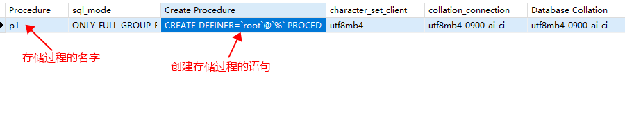
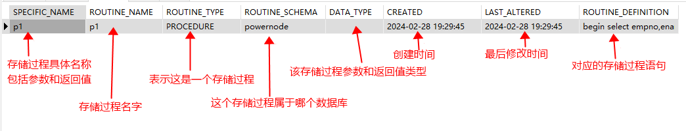
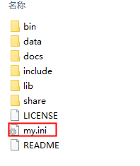
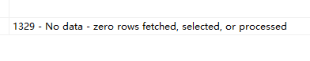
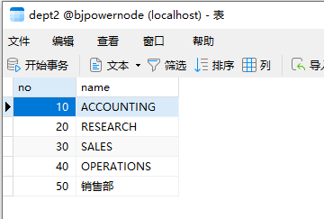

存储过程可称为过程化SQL语言，是在普通SQL语句的基础上增加了编程语言的特点，把数据操作语句(DML)和查询语句(DQL)组织在过程化代码中，通过逻辑判断、循环等操作实现复杂计算的程序语言。 换句话说，存储过程其实就是数据库内置的一种编程语言，这种编程语言也有自己的变量、if语句、循环语句等。在一个存储过程中可以将多条SQL语句以逻辑代码的方式将其串联起来，执行这个存储过程就是将这些SQL语句按照一定的逻辑去执行，所以一个存储过程也可以看做是一组为了完成特定功能的SQL 语句集。 每一个存储过程都是一个数据库对象，就像table和view一样，存储在数据库当中，一次编译永久有效。并且每一个存储过程都有自己的名字。客户端程序通过存储过程的名字来调用存储过程。在数据量特别庞大的情况下利用存储过程能达到倍速的效率提升。
create procedure p1()
begin
select empno,ename from emp;
end;
call p1();
show create procedure p1;

通过系统表information_schema.ROUTINES查看存储过程的详细信息：
information_schema.ROUTINES 是 MySQL 数据库中一个系统表，存储了所有存储过程、函数、触发器的详细信息，包括名称、返回值类型、参数、创建时间、修改时间等。
select * from information_schema.routines where routine_name = 'p1';

information_schema.ROUTINES 表中的一些重要的列包括：
SPECIFIC_NAME：存储过程的具体名称，包括该存储过程的名字，参数列表。ROUTINE_SCHEMA：存储过程所在的数据库名称。ROUTINE_NAME：存储过程的名称。ROUTINE_TYPE：PROCEDURE表示是一个存储过程，FUNCTION表示是一个函数。ROUTINE_DEFINITION：存储过程的定义语句。CREATED：存储过程的创建时间。LAST_ALTERED：存储过程的最后修改时间。DATA_TYPE：存储过程的返回值类型、参数类型等。drop procedure if exists p1;
在 MySQL 中，delimiter 命令用于改变 MySQL 解释语句的定界符。MySQL 默认使用分号 ; 作为语句的定界符。而使用 delimiter 命令可以将分号 ; 更改为其他字符，从而可以在 SQL 语句中使用分号 ;。
例如，假设需要创建一个存储过程。在存储过程中通常会包括多条 SQL 语句，而这些语句都需要以分号 ; 结尾。但默认情况下，执行到第一条语句的分号 ; 后，MySQL 就会停止解释，导致后续的语句无法执行。解决方式就是使用 delimiter 命令将分号改为其他字符，使分号 ; 不再是语句定界符。例如：
delimiter //
CREATE PROCEDURE my_proc ()
BEGIN
SELECT * FROM my_table;
INSERT INTO my_table (col1, col2) VALUES ('value1', 'value2');
END //
delimiter ;
在这个例子中，我们使用 delimiter // 命令将定界符改为两个斜线 //。在存储过程中，以分号 ; 结尾的语句不再被解释为语句的结束。而使用 delimiter ; 可以将分号恢复为语句定界符。
总之，delimiter 命令可以改变 MySQL 数据库系统中 SQL 查询语句的分隔符，从而可使一条 SQL 查询语句包含多个 SQL 语句。这样的话，就方便了我们在一个语句里面加入多个语句，而且不会被错
mysql中的变量包括：系统变量、用户变量、局部变量。
MySQL 系统变量是指在 MySQL 服务器运行时控制其行为的参数。这些变量可以被设置为特定的值来改变服务器的默认设置，以满足不同的需求。 MySQL 系统变量可以具有全局（global）或会话（session）作用域。
查看系统变量
show [global|session] variables;
show [global|session] variables like '';
select @@[global|session.]系统变量名;
注意：没有指定session或global时，默认是session。
设置系统变量
set [global | session] 系统变量名 = 值;
set @@[global | session.]系统变量名 = 值;
注意：无论是全局设置还是会话设置，当mysql服务重启之后，之前配置都会失效。可以通过修改MySQL根目录下的my.ini配置文件达到永久修改的效果。（my.ini是MySQL数据库默认的系统级配置文件，默认是不存在的，需要新建，并参考一些资料进行配置。） windows系统是my.ini linux系统是my.cnf my.ini文件通常放在mysql安装的根目录下，如下图：

这个文件通常是不存在的，可以新建，新建后例如提供以下配置：[mysqld]
autocommit=0
这种配置就表示永久性关闭自动提交机制。（不建议这样做。）
用户自定义的变量。只在当前会话有效。所有的用户变量'@'开始。
给用户变量赋值
set @name = 'jackson';
set @age := 30;
set @gender := '男', @addr := '北京大兴区';
select @email := 'jackson@123.com';
select sal into @sal from emp where ename ='SMITH';
读取用户变量的值
select @name, @age, @gender, @addr, @email, @sal;
注意：mysql中变量不需要声明。直接赋值就行。如果没有声明变量，直接读取该变量，返回null
在存储过程中可以使用局部变量。使用declare声明。在begin和end之间有效。
变量的声明
declare 变量名 数据类型 [default ...];
变量的数据类型就是表字段的数据类型，例如：int、bigint、char、varchar、date、time、datetime等。 注意：declare通常出现在begin end之间的开始部分。
变量的赋值
set 变量名 = 值;
set 变量名 := 值;
select 字段名 into 变量名 from 表名 ...;
例如：以下程序演示局部变量的声明、赋值、读取：
create PROCEDURE p2()
begin
/*声明变量*/
declare emp_count int default 0;
/*声明变量*/
declare sal double(10,2) default 0.0;
/*给变量赋值*/
select count(*) into emp_count from emp;
/*给变量赋值*/
set sal := 5000.0;
/*读取变量的值*/
select emp_count;
/*读取变量的值*/
select sal;
end;
call p2();
语法格式：
if 条件 then
......
elseif 条件 then
......
elseif 条件 then
......
else
......
end if;
案例：员工月薪sal，超过10000的属于“高收入”，6000到10000的属于“中收入”，少于6000的属于“低收入”。
create procedure p3()
begin
declare sal int default 5000;
declare grade varchar(20);
if sal > 10000 then
set grade := '高收入';
elseif sal >= 6000 then
set grade := '中收入';
else
set grade := '低收入';
end if;
select grade;
end;
call p3();
存储过程的参数包括三种形式： - in：入参（未指定时，默认是in） - out：出参 - inout：既是入参，又是出参
案例：员工月薪sal，超过10000的属于“高收入”，6000到10000的属于“中收入”，少于6000的属于“低收入”。
create procedure p4(in sal int, out grade varchar(20))
begin
if sal > 10000 then
set grade := '高收入';
elseif sal >= 6000 then
set grade := '中收入';
else
set grade := '低收入';
end if;
end;
call p4(5000, @grade);
select @grade;
案例：将传入的工资sal上调10%
create procedure p5(inout sal int)
begin
set sal := sal * 1.1;
end;
set @sal := 10000;
call p5(@sal);
select @sal;
语法格式：
case 值
when 值1 then
......
when 值2 then
......
when 值3 then
......
els
......
end case;
case
when 条件1 then
......
when 条件2 then
......
when 条件3 then
......
else
......
end case;
案例：根据不同月份，输出不同的季节。3 4 5月份春季。6 7 8月份夏季。9 10 11月份秋季。12 1 2 冬季。其他非法。
create procedure mypro(in month int, out result varchar(100))
begin
case month
when 3 then set result := '春季';
when 4 then set result := '春季';
when 5 then set result := '春季';
when 6 then set result := '夏季';
when 7 then set result := '夏季';
when 8 then set result := '夏季';
when 9 then set result := '秋季';
when 10 then set result := '秋季';
when 11 then set result := '秋季';
when 12 then set result := '冬季';
when 1 then set result := '冬季';
when 2 then set result := '冬季';
else set result := '非法月份';
end case;
end;
create procedure mypro(in month int, out result varchar(100))
begin
case
when month = 3 or month = 4 or month = 5 then
set result := '春季';
when month = 6 or month = 7 or month = 8 then
set result := '夏季';
when month = 9 or month = 10 or month = 11 then
set result := '秋季';
when month = 12 or month = 1 or month = 2 then
set result := '冬季';
else
set result := '非法月份';
end case;
end;
call mypro(9, @season);
select @season;
语法格式：
while 条件 do
循环体;
end while;
案例：传入一个数字n，计算1~n中所有偶数的和。
create procedure mypro(in n int)
begin
declare sum int default 0;
while n > 0 do
if n % 2 = 0 then
set sum := sum + n;
end if;
set n := n - 1;
end while;
select sum;
end;
call mypro(10);
语法格式：
repeat
循环体;
until 条件
end repeat;
注意：条件成立时结束循环。
案例：传入一个数字n，计算1~n中所有偶数的和。
create procedure mypro(in n int, out sum int)
begin
set sum := 0;
repeat
if n % 2 = 0 then
set sum := sum + n;
end if;
set n := n - 1;
until n <= 0
end repeat;
end;
call mypro(10, @sum);
select @sum;
语法格式：
create procedure mypro()
begin
declare i int default 0;
mylp:loop
set i := i + 1;
if i = 5 then
leave mylp;
end if;
select i;
end loop;
end;
create procedure mypro()
begin
declare i int default 0;
mylp:loop
set i := i + 1;
if i = 5 then
iterate mylp;
end if;
if i = 10 then
leave mylp;
end if;
select i;
end loop;
end;
游标（cursor）可以理解为一个指向结果集中某条记录的指针，允许程序逐一访问结果集中的每条记录，并对其进行逐行操作和处理。
使用游标时，需要在存储过程或函数中定义一个游标变量，并通过 DECLARE 语句进行声明和初始化。然后，使用 OPEN 语句打开游标，使用 FETCH 语句逐行获取游标指向的记录，并进行处理。最后，使用 CLOSE 语句关闭游标，释放相关资源。游标可以大大地提高数据库查询的灵活性和效率。
声明游标的语法：
declare 游标名称 cursor for 查询语句;
打开游标的语法：
open 游标名称;
通过游标取数据的语法：
fetch 游标名称 into 变量[,变量,变量......]
关闭游标的语法：
close 游标名称;
案例：从dept表查询部门编号和部门名，创建一张新表dept2，将查询结果插入到新表中。
drop procedure if exists mypro;
create procedure mypro()
begin
declare no int;
declare name varchar(100);
declare dept_cursor cursor for select deptno,dname from dept;
drop table if exists dept2;
create table dept2(
no int primary key,
name varchar(100)
);
open dept_cursor;
while true do
fetch dept_cursor into no, name;
insert into dept2(no,name) values(no,name);
end while;
close dept_cursor;
end;
call mypro();
执行结果：

出现了异常：异常信息中显示没有数据了。这是因为while true循环导致的。不过虽然出现了异常，但是表创建成功了，数据也插入成功了：

注意：声明局部变量和声明游标有顺序要求，局部变量的声明需要在游标声明之前完成。语法格式：
DECLARE handler_name HANDLER FOR condition_value action_statement
handler_name 表示异常处理程序的名称，重要取值包括：CONTINUE：发生异常后，程序不会终止，会正常执行后续的过程。(捕捉)EXIT：发生异常后，终止存储过程的执行。（上抛）condition_value 是指捕获的异常，重要取值包括：SQLSTATE sqlstate_value，例如：SQLSTATE '02000'SQLWARNING，代表所有01开头的SQLSTATENOT FOUND，代表所有02开头的SQLSTATESQLEXCEPTION，代表除了01和02开头的所有SQLSTATEaction_statement 是指异常发生时执行的语句，例如：CLOSE cursor_name给之前的游标添加异常处理机制：
drop procedure if exists mypro;
create procedure mypro()
begin
declare no int;
declare name varchar(100);
declare dept_cursor cursor for select deptno,dname from dept;
declare exit handler for not found close dept_cursor;
drop table if exists dept2;
create table dept2(
no int primary key,
name varchar(100)
);
open dept_cursor;
while true do
fetch dept_cursor into no, name;
insert into dept2(no,name) values(no,name);
end while;
close dept_cursor;
end;
call mypro();